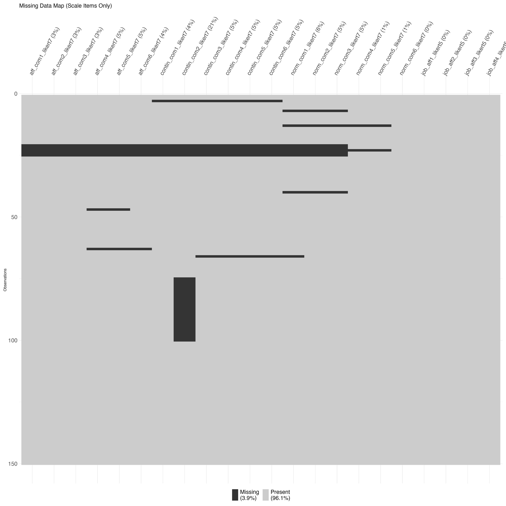

3 Data Science Pipelines in R
| Associated Files |
|---|
| data-qualtrics.csv |
3.1 Introduction
On the previous chapter, you learned how to read Qualtrics data and prepare it for analysis using a single R script. That approach works well for learning—but as your projects grow more complex, a single script becomes unwieldy. In this tutorial, you’ll learn how to organize your work into a data science pipeline: a series of modular scripts that each handle one specific task.
Recall we first saw the pipeline in this figure in a previous chapter. Today we will create a series of scripts. Most of these scripts correspond to the “Processing Code” step in the above figure. That is, we have expanded the Processing Code to have its own multi-step pipeline. In this chapter, we walk you through creating that pipeline.
Note that we use a different sample data set for this chapter, but the principles apply equally well to your own data. The data set for this chapter has missing data unlike the one in the previous chapter.
3.2 Why Use a Pipeline?
Consider the single-script approach you’ve been using. It might look something like this:
# Everything in one file...
library(tidyverse)
library(janitor)
# Import
raw_data <- read_csv("data-qualtrics.csv", skip = 3)
# Clean
analytic_data <- raw_data |>
select(-StartDate, -EndDate, ...) |>
clean_names()
# Recode Likert scales
# ... 50 more lines ...
# Create scales
# ... 30 more lines ...
# Exclusions
# ... 20 more lines ...
# Analysis
# ... and so onThis approach has several problems:
- Difficult to debug: When something goes wrong on line 247, finding the cause is tedious.
- Hard to modify: Changing one part risks breaking another.
- Poor collaboration: Lab members can’t work on different sections simultaneously.
- No checkpoints: If you make a mistake, you must re-run everything from scratch.
A pipeline solves these problems by breaking your workflow into discrete, manageable steps.
3.3 The Pipeline Structure
Our data science pipeline uses a specific folder structure:
My Project/
├── 00-script-master.R # Runs the entire pipeline
├── 01-import.R # Load and initial setup (Preprocessing Code)
├── 02-clean-recode.R # Factors and Likert recoding (Preprocessing Code)
├── 03-missing-data.R # Evaluate missingness (Preprocessing Code)
├── 04-create-scales.R # Compute scale scores (Preprocessing Code)
├── 05-exclusions.R # Apply exclusion criteria (Preprocessing Code)
├── 06-analysis.R # Analysis and visualization (Analytic Code)
├── data-raw/ # Folder: Original data (NEVER modify)
├── data-interim/ # Folder: Checkpoint files between steps
├── data-processed/ # Folder: Final analytic dataset
└── output/ # Folder: Output, tables, figures, etc.This structure follows the principle of separating raw data, interim data, processed data, and output. Each script reads from the previous step and writes to the next.
3.4 Create Required Folders
Begin by creating the necessary folders in your project directory. You can do this manually or with R code. But we will begin mannually for clarity.
First, create a folder with the name of your project. This folder might be called “My-Thesis” or something similar. Today we will call this folder “My Project”.
Second, create empty R script files inside “My Project” folder named as follows:
00-script-master.R01-import.R02-clean-recode.R03-missing-data.R04-create-scales.R05-exclusions.R06-analysis.R
Third, inside “My Project”, create the following folders:
data-raw/data-interim/data-processed/output/
Next, place your raw data file (e.g., data-qualtrics.csv) inside the data-raw/ folder. This file should never be modified.
3.5 The Master Script
The master script is the conductor of your pipeline. It loads all necessary packages once, then calls each step in order. Copy the script below into 00-script-master.R.
# Date: 2026-01-15 (Use YYYY-MM-DD format)
# Name: [Your Name]
# Purpose: Master - Runs all data preparation steps in order
# 1. Setup Environment ----------------------------------------------------
library(tidyverse)
library(janitor)
library(skimr)
library(naniar) # Package for missing data visualization
# Clear memory to ensure reproducibility
rm(list = ls())
# Create directories if they don't exist (helpful for students)
if(!dir.exists("data-interim")) dir.create("data-interim")
if(!dir.exists("data-processed")) dir.create("data-processed")
if(!dir.exists("output")) dir.create("output")
# 2. Execute Pipeline -----------------------------------------------------
# Step 1: Import and Anonymize
message("--- Running Step 1: Import ---")
source("01-import.R", echo = TRUE)
# Step 2: Cleaning and Recoding
message("--- Running Step 2: Cleaning ---")
source("02-clean-recode.R", echo = TRUE)
# Step 3: Evaluate missing data
message("--- Running Step 3: Evaluate missing data ---")
source("03-missing-data.R", echo = TRUE)
# Step 4: Create scales
message("--- Running Step 4: Create scales ---")
source("04-create-scales.R", echo = TRUE)
# Step 5: Exclusions
message("--- Running Step 5: Excluding participants ---")
source("05-Exclusions.R", echo = TRUE)
# Step 6: Analysis and Visualization
message("--- Running Step 6: Analysis and Visualization ---")
source("06-analysis.R", echo = TRUE)
message("--- Pipeline Complete! ---")Notice several important features:
- The
here()function ensures file paths work on any computer (Windows, Mac, Linux) source()withecho = TRUEshows you what each script is doingmessage()calls provide clear progress indicators- All packages are loaded once at the beginning
3.6 Step 1: Import
The import script handles loading raw data and initial cleanup. This is essentially the first part of your single script, isolated:
# Step 1: Import and Initial Setup
# Load Data ---------------------------------------------------------------
survey_file <- "data-raw/data-qualtrics.csv"
# Read header row for names
col_names <- names(read_csv(survey_file, n_max = 0, show_col_types = FALSE))
# Read data (skipping Qualtrics header rows 2 and 3)
raw_data <- read_csv(survey_file,
col_names = col_names,
skip = 3,
show_col_types = FALSE,
na = c("", "NA","999")) # Treat blank cells as NA
# Select Columns ----------------------------------------------------------
# NOTE: We comment out "Duration" so we can use it for exclusions later!
cols_to_remove <- c("StartDate", "EndDate", "Status", "IPAddress", "Progress",
"Finished", "RecordedDate", "ResponseId", "RecipientLastName",
"RecipientFirstName", "RecipientEmail", "ExternalReference",
"LocationLatitude", "LocationLongitude", "DistributionChannel",
"UserLanguage")
analytic_data_survey <- raw_data |>
select(!any_of(cols_to_remove)) |>
clean_names() |>
remove_empty("rows") |>
remove_empty("cols")
# Create Participant ID ---------------------------------------------------
# Best practice: Create ID immediately so we can track rows if order changes
analytic_data_survey <- analytic_data_survey %>%
mutate(participant_id = row_number()) %>%
relocate(participant_id) # Move to first column
# Save Interim File -------------------------------------------------------
# We use .rds because it preserves R formatting (unlike CSV)
write_rds(analytic_data_survey, "data-interim/01-imported.rds")Key insight: We save using .rds format, not .csv. The RDS format preserves R data types (factors, dates, etc.) exactly as they are. CSV files lose this information.
3.7 Step 2: Clean and Recode
This script handles factor creation and Likert scale recoding:
# Step 2: Cleaning, Factors, and Recoding
# Load Previous Step ------------------------------------------------------
analytic_data_survey <- read_rds("data-interim/01-imported.rds")
# Factor Handling ---------------------------------------------------------
# Convert sex to factor and fix levels
analytic_data_survey <- analytic_data_survey %>%
mutate(sex = as_factor(sex)) %>%
mutate(sex = fct_relevel(sex, "female", "intersex", "male"))
# Safety Check: Warn if new genders appear
expected_sex <- c("female", "intersex", "male")
unexpected <- setdiff(levels(analytic_data_survey$sex), expected_sex)
if (length(unexpected) > 0) {
warning("Check Data! Unexpected sex levels found: ", paste(unexpected, collapse = ", "))
}
# Likert Recoding (Text to Numbers) ---------------------------------------
# Define Mappings
likert7_recode <- c(
"Strongly Disagree" = 1,
"Moderately Disagree" = 2,
"Slightly Disagree" = 3,
"Neither Agree nor Disagree" = 4,
"Slightly Agree" = 5,
"Moderately Agree" = 6,
"Strongly Agree" = 7
)
likert5_recode <- c(
"Strongly Disagree" = 1,
"Disagree" = 2,
"Neutral" = 3,
"Agree" = 4,
"Strongly Agree" = 5
)
# Apply Mappings
analytic_data_survey <- analytic_data_survey %>%
# Recode 7-point scales
mutate(across(
.cols = contains("likert7"),
.fns = ~ likert7_recode[.x]
)) %>%
# Recode 5-point scales
mutate(across(
.cols = contains("likert5"),
.fns = ~ likert5_recode[.x]
))
# Reverse Keying ----------------------------------------------------------
analytic_data_survey <- analytic_data_survey %>%
mutate(across(
.cols = ends_with("_likert7rev"),
.fns = ~ (7 + 1) - .x
)) %>%
# Rename columns to remove the 'rev' suffix now that they are fixed
rename_with(
.fn = ~ str_replace(.x, "_likert7rev", "_likert7"),
.cols = ends_with("_likert7rev")
)
# Save Interim File -------------------------------------------------------
write_rds(analytic_data_survey, "data-interim/02-cleaned.rds")Notice how our naming conventions (likert7, likert7rev, likert5) make it possible to apply recoding to multiple columns at once using contains() and ends_with(). This is why consistent naming matters.
3.8 Step 3: Missing Data Evaluation
Before creating scales, we should understand our missing data. This step generates reports but doesn’t modify the data. Importantly, we need to check the reports it creates in the output directory after we run this code. The amount and location of the missing data may suggestion a different course of action than the default approach used in these scripts.
# Step 3: Missing Data Evaluation
# Load Previous Step ------------------------------------------------------
analytic_data_survey <- read_rds("data-interim/02-cleaned.rds")
# Define Scale Items ------------------------------------------------------
# We select the columns relevant for scoring to check them specifically
scale_items <- analytic_data_survey %>%
select(starts_with("aff_com"),
starts_with("contin_com"),
starts_with("norm_com"),
starts_with("job_aff"))
# Missing Data Diagnosis --------------------------------------------------
# 1. Text Report: Items with the most missing data
message("--- Missing Data Report by Item ---")
missing_summary <- scale_items %>%
miss_var_summary() %>% # From naniar
filter(n_miss > 0)
print(missing_summary)
write_csv(missing_summary, "output/missing-data-by-item.csv")
# 2. Text Report: Participants with too much missing data
# Check if any participant is missing more than 20% of the scale items
message("--- Participants with > 20% Missing Data ---")
high_missing_participants <- analytic_data_survey %>%
rowwise() %>%
mutate(pct_missing = mean(is.na(c_across(c(starts_with("aff_com"),
starts_with("contin_com"),
starts_with("norm_com"),
starts_with("job_aff"))))) * 100) %>%
ungroup() %>%
filter(pct_missing > 20) %>%
select(participant_id, pct_missing)
print(high_missing_participants)
write_csv(high_missing_participants, "output/high-missing-participants.csv")
# 3. Visual Report
# Generates a map of missingness (Black = Missing, Grey = Present)
# We use 'print()' to ensure the plot renders when running from a script
message("--- Generating Missing Data Map ---")
plot_missing <- vis_miss(scale_items) +
labs(title = "Missing Data Map (Scale Items Only)") +
theme(axis.text.x = element_text(angle = 60, hjust = 0, vjust = 0, size = 16),
axis.text.x.top = element_text(margin = margin(b = 2)),
axis.text.y = element_text(size = 16),
plot.title = element_text(size = 16),
legend.text = element_text(size = 16),
legend.title = element_text(size = 16),
plot.margin = margin(t = 10, r = 10, b = 10, l = 10))
ggsave("output/missing-data-map.pdf", plot = plot_missing, width = 20, height = 20)
ggsave("output/missing-data-map.png", plot = plot_missing, width = 20, height = 20, dpi = "print")
# Data not altered so no need to saveThis step saves diagnostic outputs to the output/ folder. You can review these to decide whether any participants should be excluded for excessive missing data.
3.9 Step 4: Create Scales
Now we compute scale scores by averaging items:
# Step 4: Scale Creation
# Load Previous Step ------------------------------------------------------
analytic_data_survey <- read_rds("data-interim/02-cleaned.rds")
# Create Scale Scores -----------------------------------------------------
# Note: We use rowwise() for accurate mean calculations across columns
analytic_data_survey <- analytic_data_survey %>%
rowwise() %>%
mutate(
affective_commitment = mean(c_across(starts_with("aff_com")), na.rm = TRUE),
continuance_commitment = mean(c_across(starts_with("contin_com")), na.rm = TRUE),
normative_commitment = mean(c_across(starts_with("norm_com")), na.rm = TRUE),
job_satisfaction = mean(c_across(starts_with("job_aff")), na.rm = TRUE)
) %>%
ungroup() # Always ungroup after rowwise()!
# Clean up Item columns (Optional - keeps dataset clean)
analytic_data_survey <- analytic_data_survey %>%
select(-starts_with("aff_com"),
-starts_with("contin_com"),
-starts_with("norm_com"),
-starts_with("job_aff"))
# Save Interim File -------------------------------------------------------
write_rds(analytic_data_survey, "data-interim/03-scales-created.rds")Important: Always call ungroup() after rowwise(). Forgetting this can cause unexpected behavior in subsequent operations.
3.10 Step 5: Exclusions
This step applies your preregistered exclusion criteria:
# Step 5: Exclusions
# Rules for excluding participants should be preregistered.
# In this example, we exclude participants who completed the survey in under 2 minutes.
# Load Previous Step ------------------------------------------------------
analytic_data_survey <- read_rds("data-interim/03-scales-created.rds")
# Exclusions --------------------------------------------------------------
# Filter out speeders (Requires 'duration_in_seconds' from Step 1)
initial_n <- nrow(analytic_data_survey)
# Only keep participants with duration >= 120 seconds (2 minutes)
analytic_data_survey <- analytic_data_survey %>%
filter(duration_in_seconds >= 120)
# Print a message telling the student how many were dropped
final_n <- nrow(analytic_data_survey)
message(paste("Dropped", initial_n - final_n, "participants due to speed checks."))
# Final Save --------------------------------------------------------------
write_rds(analytic_data_survey, "data-processed/analytic-data-final.rds")
# Display final structure
glimpse(analytic_data_survey)Note that this script saves to data-processed/, not data-interim/. This signals that the data is now ready for analysis.
3.11 Step 6: Analysis
Finally, the analysis script loads the clean data and performs your statistical analyses:
# Step 6: Analysis
# Rules for excluding participants should be preregistered.
# In this example, we exclude participants who completed the survey in under 2 minutes.
# 1. Setup Environment for Analyses ----------------------------------------------------
library(tidyverse)
# Load Previous Step ------------------------------------------------------
analytic_data_survey <- read_rds("data-processed/analytic-data-final.rds")
# Analysis ----------------------------------------------------------------
# Example Analysis: Descriptive Statistics3.12 Converting Your Single Script
To convert your existing single script to a pipeline:
- Create the folder structure shown above
- Identify natural breakpoints in your code (import, cleaning, scales, exclusions, analysis)
- Move each section to its own numbered script
- Add
read_rds()at the start of each script (except step 1) - Add
write_rds()at the end of each script - Create a master script that sources each step in order
3.13 Benefits of the Pipeline Approach
The pipeline approach offers several advantages over a single script:
| Single Script | Pipeline Approach |
|---|---|
| Everything in one file | Modular, numbered scripts |
| Difficult to debug | Each step is isolated and testable |
| Must re-run everything | Can re-run from any checkpoint |
| Hard to collaborate | Team members can work on different steps |
| No clear progress indicators | Messages show which step is running |
The pipeline approach requires a bit more setup, but the benefits for debugging, collaboration, and reproducibility make it well worth the effort—especially as your projects grow in complexity.
3.14 Running the Pipeline
To run the entire pipeline, simply open script-master.R and run it. You can also run individual scripts if you need to re-do just one step (for example, if you change your exclusion criteria, you only need to re-run steps 5 and 6).
Let’s run the master script now to see the pipeline in action!
Recall, running the script places the missing data evaluation in the output folder. Let’s check that folder to see the results of that step.
That folder contains three files: 1. missing-data-by-item.csv: A summary of missing data by item. 2. high-missing-participants.csv: A list of participants with more than 20% missing data. 3. missing-data-map.pdf: A visual map of missing data patterns.
3.14.1 Missing data by item
We can see the percentage of missing data for each item by examining the CSV file created in the output folder called missing-data-by-item.csv.
| variable | n_miss | pct_miss |
|---|---|---|
| contin_com2_likert7 | 32 | 21.333333 |
| norm_com1_likert7 | 9 | 6.000000 |
| norm_com2_likert7 | 8 | 5.333333 |
| norm_com3_likert7 | 8 | 5.333333 |
| aff_com4_likert7 | 7 | 4.666667 |
| aff_com5_likert7 | 7 | 4.666667 |
| contin_com3_likert7 | 7 | 4.666667 |
| contin_com4_likert7 | 7 | 4.666667 |
| contin_com5_likert7 | 7 | 4.666667 |
| contin_com6_likert7 | 7 | 4.666667 |
| aff_com6_likert7 | 6 | 4.000000 |
| contin_com1_likert7 | 6 | 4.000000 |
| aff_com1_likert7 | 5 | 3.333333 |
| aff_com2_likert7 | 5 | 3.333333 |
| aff_com3_likert7 | 5 | 3.333333 |
| norm_com4_likert7 | 2 | 1.333333 |
| norm_com5_likert7 | 2 | 1.333333 |
3.14.2 Missing data by person
We can see the percentage of missing data for each person by examining the CSV file created in the output folder called high-missing-participants.csv.
| participant_id | pct_missing |
|---|---|
| 3 | 27.27273 |
| 13 | 22.72727 |
| 21 | 68.18182 |
| 22 | 68.18182 |
| 23 | 77.27273 |
| 24 | 68.18182 |
| 25 | 68.18182 |
| 66 | 22.72727 |
3.14.3 Visual missing data map
We can see the visual missing data map created in the output folder called missing-data-map.pdf. This visual map helps identify patterns in the missing data across items and participants.
